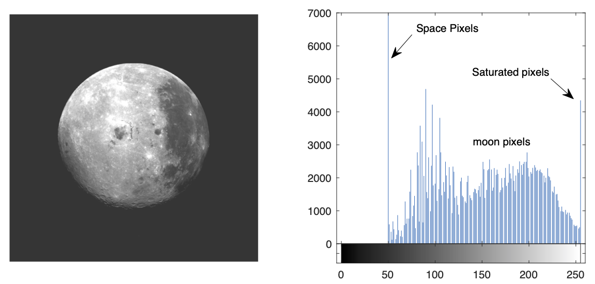
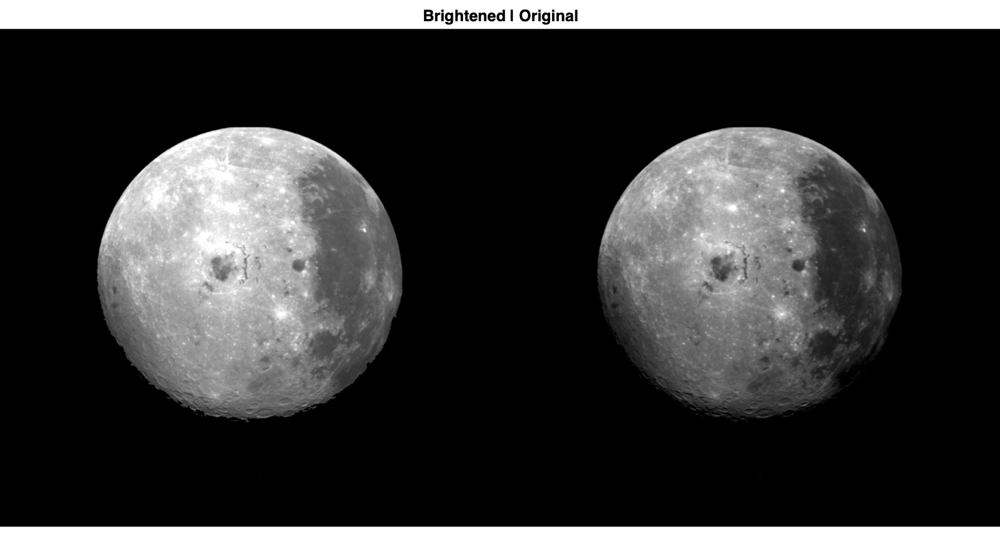
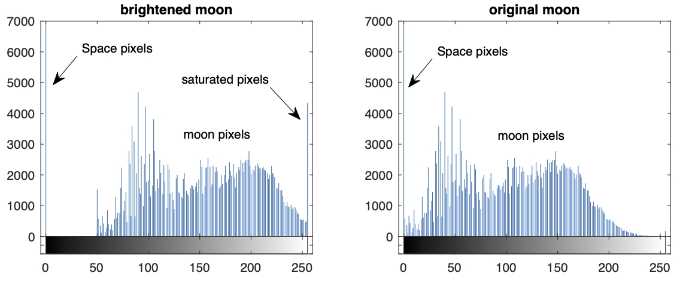
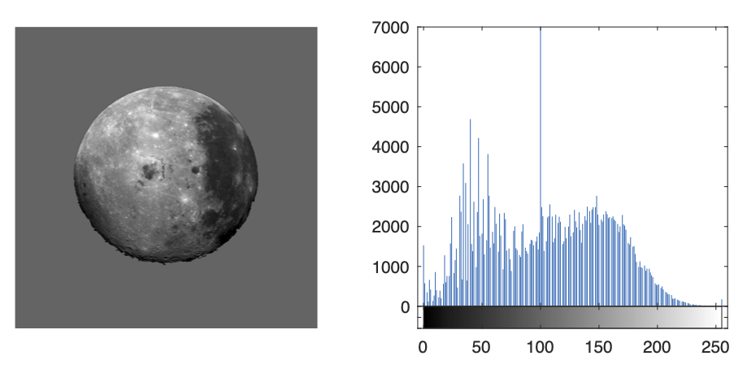
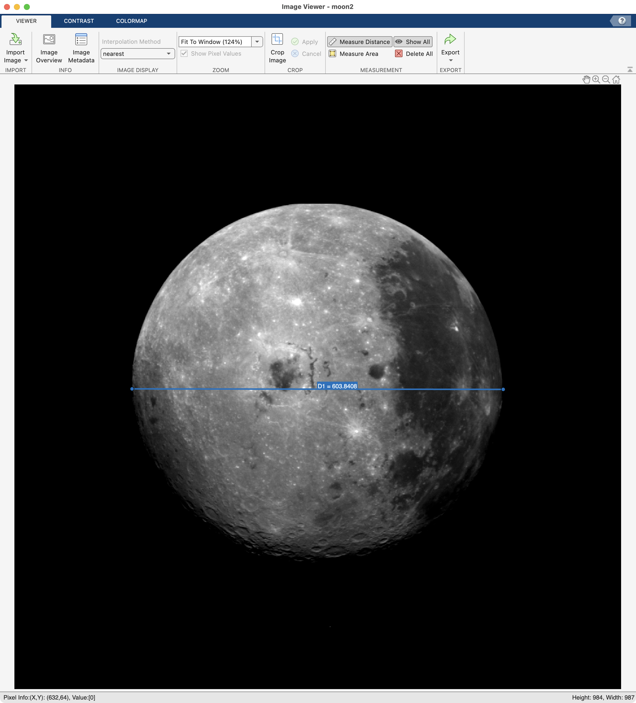

Region Processing
For counting and measuring stuff
Overview
Ok. Great. We have segmented the moon and cleaned up the mask, so… now what? Well, now, lots of stuff. For example, you can use that mask to make calculations, such as the area or diameter of the mask. Or you can use the mask to restrict image processing to the corresponding regions in the image.
Things you should know
You should know how to:
-
Calculate quantities, such as area and length, using image masks and simple mathematical operations
-
Convert calculated quantities into real-world measurements
-
Calculate the region properties of connected components using the Image Region Analyzer tool or the
regionpropsfunction
Important Terminology
- Region Properties: The properties of said regions. Examples include area, count, roundness, etc.
Stuff you should read
Functions you should know
- regionprops - Measure properties of image regions
Local Processing
Say we wanted to increase the brightness of the moon. For reference, here is our moon and it's histogram. You can find the code for loading the moon here.:

Original moon2 and its histogram
Since all images are just numeric matrices, the simplest way to brighten an image is to add 50 to all pixels, as follows

And the moon is brighter, but so is space, which is now an unsatisfyingly dull gray. When we examine the histogram, we see that we have simply shifted the distribution of pixels to the right and introduced a significant number of saturated pixels, thereby reducing the overall contrast in the image. Remember, this is an 8-bit image, so the maximum intensity any one pixel can have is 255.
To avoid changing the brightness of space, we can use our moon mask as a logical index to restrict the brightening of pixels to just those pixels found in the moon. Remember, we created our moon mask here and stored the final cleaned-up mask in p.sm_nz.
% set image and mask
moon_bright = moon2; % copy moon image;
moon_mask = p.sm_nz; % copy final mask from clean-up steps
% brighten image
moon_bright(moon_mask) = moon_bright(moon_mask) + 50; % brighten moon by 50 (1)
% display results
imshowpair(moon_bright, moon2,'montage') % display side-by-side
title('Brightened | Original')
- Notice the use of recursive assignment here: On both sides of the equal sign we have
moon_bright(moon_mask). This means to only brighten those pixels that fall inside the moon and then overwrite those values with the brightened ones.

Using
moon_maskas a logical index on the grayscale imagemoon_brightallows us to add 50 to only those pixels found inside the mask (and nowhere else). Notice that space has remained a satisfyingly dark black.
We can also see the effect of just brightening the moon pixels by comparing the histograms:

Here you can see that the space pixel bin remains locked at 0 for both histograms, while in the brightened histogram, the moon pixels have been shifted to the right, brightening the moon. Also notice that in the brightened image there are now a significant number of pixels that have been saturated to the maximum pixel intensity of 255. These pixels appear as bright white in the brightened image. It is usually not best practice to saturate a large portion of your pixels and the brightened image does look worse than the original image, but fine for demonstration purposes.
Challenge - Brighten up That Space
Using the same moon mask from the example above, how would you brighten just the space pixels and not moon pixels, as shown below? Recall that in the original image the space pixels all had a value of 0. Review the histogram. can you guess what intensity value the space pixels should be set to?
space_bright = moon2; % copy moon image
space_bright(~moon_mask) = 100; % set all NON-MOON pixels (aka SPACE pixels) to 100
% display the results
subplot(1,2,1);
imshow(space_bright) % show brightened space image
subplot(1,2,2);
imhist(space_bright) % show histogram
xlim([-5 260]) % adjust X-
ylim([0 7e3]) % and Y- limits of the histogram
…As you can see from the code, we set the space pixel intensity values all to 100. Remember, "~" means LOGICAL NOT, which basically converts all TRUEs to FALSEs, and vice versa in the binary image.

Size Measurements
We can also use masks to make measurements. Recall, each pixel in an image represents the sampling of a location in space. Think tiny little boxes. As such, each pixel has a set width and length and, of course, an area. The length and width of each pixel is 1 and the area is also 1 (1x1 = 1 pixel\(^2\)). So measuring objects typically consists of counting pixels (and even fractions of pixels).
For example, we can easily calculate the area of the moon mask by counting the number of pixels inside the mask. Since moon_mask is a logical array that contains only logical 1's and 0's, all you need to do add up all of the ones. MATLAB does this automatically for you when use the function sum:
| Calculate the area of the mask | |
|---|---|
…The value returned is the area in pixels\(^2\)
Real World measurements
But what if we want to know our value in real-world measurements, like square miles (or square kilometers if you're un-American and have a fetish for reasonably spaced metrics).
For that, we need to know the dimensions of the pixels, length and width, in miles. Often this type of information is included in the metadata of the image, but sadly our image did not provide such data. In such a situation, we need to compare our measurement to a known measurement, like the actual diameter of the Moon in miles.
Once we have such a measurement, we can then easily figure out how big our pixels are in real-world measurements using the following steps
- Calculate the diameter of the Moon in pixels
- Get the actually diameter of the Moon in miles
- Divide the number of miles by the number of pixels to get the miles/pixel ratio in our image.
So, how do we determine the diameter of the Moon in pixels? Well, we could just draw a line on the moon, using the `imageViewer app.

As shown here, Image Viewer has a "Measure Distance" tool, which we can use to measure distances in pixel on an image. Here, we measure the diameter of the moon to be 603.84 pixels (blue line).
However, this method requires a precise placement of the line on the image. Another, more robust method that doesn't require user input would be to calculate the diameter from the area. Since the profile of the Moon is basically a circle, we calculate the diameter use some simple Euclidean Geometry and the rearranging of terms, as follows:
- \(A=\pi \cdot r^2\) - Area of a circle
- \(r = \sqrt{A / π}\) - radius from the area
- \(d = 2 \cdot \sqrt{A / π}\) - diameter is 2x the radius
Now we can calculate the diameter (in pixels) using the moon area that we calculated above:
| Get Moon Diameter from Area | |
|---|---|
…And we get a value that is slightly smaller than the value we measured using the Measure Distance tool, but within reason.
Next, we need the diameter of the moon in actual miles. Luckily we have google, which tells us that the diameter of the moon is 2,159 miles. Sounds big. That's basically the distance between Denver and Miami.
Finally, we can calculate the size of a pixel, as follows:
| Calculate Miles Per Pixel | |
|---|---|
…Thus, each pixel in the moon image is 3.67 miles per side (width and height), assuming square pixels.
Now we can calculate the area of the moon mask in square miles:
| Calc Area in Square Miles | |
|---|---|
…Which means that the cross-sectional area of the surface of the moon (the largest slice through the moon) is approximately 3.7 million square miles. That's real big.
Intensity Measurements
Using the mask of the moon we can also calculate intensities metrics from the original image, such mean intensity:
If we use the mask as logical index, we get the pixel values from inside the Moon. If we average those values, we get the mean intensity inside the moon
| Mean Intensity of Moon | |
|---|---|
Compare this to the overall average intensity of the image.
| Mean Intensity of Image | |
|---|---|
- Remember,
(:)means all elements
…The average of the image is far lower than the average of the moon, because the image includes a high number of space pixels with an intensity of 0.
Challenge - Intensity Measurements
How would you calculate the range, min, and max pixel intensity of the moon pixels?
| Calculate Range | |
|---|---|
| Calculate Minimum | |
|---|---|
| Calculate Max | |
|---|---|
Regional Processing Functions
The function regionprops simplifies the process of calculating region properties. With one simple function call, you can quickly calculate an entire series of properties:
| Calculate all the Region Properties | |
|---|---|
ans =
struct with fields:
Area: 273495
Centroid: [493.4251 483.4057]
BoundingBox: [191.5000 194.5000 603 584]
SubarrayIdx: {[1×584 double] [1×603 double]}
MajorAxisLength: 600.7383
MinorAxisLength: 579.7442
Eccentricity: 0.2621
Orientation: -6.8450
ConvexHull: [400×2 double]
ConvexImage: [584×603 logical]
ConvexArea: 276330
Circularity: 0.7914
Image: [584×603 logical]
FilledImage: [584×603 logical]
FilledArea: 273495
EulerNumber: 1
Extrema: [8×2 double]
EquivDiameter: 590.1056
Solidity: 0.9897
Extent: 0.7766
PixelIdxList: [273495×1 double]
PixelList: [273495×2 double]
Perimeter: 2.0840e+03
PerimeterOld: 2.2039e+03
MaxFeretDiameter: 605.7169
MaxFeretAngle: -173.6494
MaxFeretCoordinates: [2×2 double]
MinFeretDiameter: 584
MinFeretAngle: -90
MinFeretCoordinates: [2×2 double]
But wait, there's more. If you also want to calculate the intensity properties from the original image, input the image as the second input:
| Calculate Intensity values | |
|---|---|
ans =
struct with fields:
WeightedCentroid: [461.4839 441.1727]
MeanIntensity: 106.2709
MinIntensity: 0
MaxIntensity: 255
…weight centroid uses intensity as an additional input to calculate the center of the mask.
Review the regionprops documentation for more information.